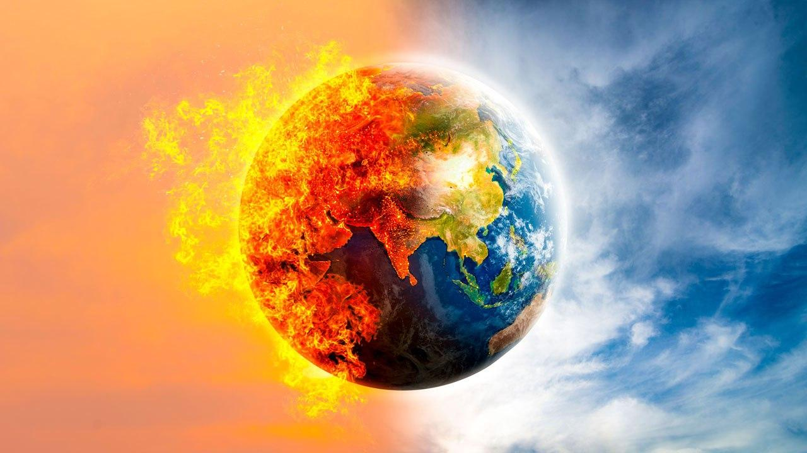

İklim değişikliği dünyamızı çok olumsuz yönden etkiliyor ve bazı zararlara sebep olabiliyor.
Son yıllarda dünyada sıcaklık ortalamasının arttığı, kutup bölgelerindeki buzulların eridiği ve küresel bir iklim değişikliğiyle karşı karşıya olunduğuna dair onlarca haber görmüş olmalısınız. Aklınızda “Küresel iklim değişikliği nedir, nedenleri ve sonuçları neler olabilir?” gibi pek çok soru taşıyorsanız tüm bunları açıklamak için öncelikle iklim kavramını tanımlamalıyız.
Bir bölgede uzun süredir hâkim olan yağış tipi ve sıklığı, nem, sıcaklık, rüzgâr gibi koşulların tamamı iklim başlığı altında değerlendirilir. İklimin o bölgenin yaşam koşulları, canlı çeşitliliği, tarımsal imkânları, sahip olduğu su kaynakları üzerinde önemli bir etkisi bulunur. Böglenin ekonomik ve sosyal refahını belirleyebilir. Peki, iklim değişikliği nedir?
İklim değişikliği nedenlerine bakılmaksızın bir bölgedeki ortalama sıcaklık, nem, yağış ve basınç değerlerinin değişmesidir. Bu durum o bölgenin tüm ekosistemini değiştirir. Su ve gıda krizi, aşırı sıcaklıklar, ekonomik dalgalanmalar gibi birçok soruna yol açabilir. Küresel iklim değişikliğiyse bu sorunların tüm dünyada yaşandığı anlamına gelir ve ülkeleri bir çıkmaza itebileceği gibi gelecekte canlıların yaşamını bile tehdit edebilir. Alınabilecek ilk tedbir, küresel iklim değişikliğinin nedenleri ve sonuçları ile ilgili bilinçlenmektir.
İklim değişikliğinin gözle görülür sonuçları gözlemlenmeye başladığından beri, bilim insanları neler yapılabileceği konusunda çalışmalar yürütüyor. Küresel Isınma BM İklim Değişikliği Çerçeve Sözleşmesi ve KYOTO Protokolü gibi adımlarla, hükümetler de karbon salınımını azaltarak iklim değişikliği etkilerini azaltmaya çaba sarf ediyor. Küresel iklim değişikliğinin önüne geçmek için sadece hükümetlerin politikalar oluşturması yeterli değil. Toplumun küresel ısınma konusunda bilinçlendirilmesi de gerekli. Uzmanlar, bireysel olarak atılacak küçük adımların bile ortalama sıcaklıklarda gözlenen artışı azaltma konusunda oldukça etkili olacağı görüşünde.
Küresel iklim değişikliği etkilerini azaltmak için bireylerin yapabileceği pek çok şey var. Öncelikle, hükümetler üstünde sürdürülebilir politikalar üretmeleri konusunda baskı oluşturmaları, çevre odaklı kararlar alınmasında oldukça etkili. Örneğin, yenilenebilir enerji kaynaklarının teşvik edilmesini ve fosil kaynaklardan enerji üretilmesinin sınırlandırılmasının hükümetlerden talep etmesi gerektiğinin altı uzmanlar tarafından özellikle çiziliyor.

Hükümetler arası İklim Değişikliği Paneli’nde (IPCC) bir araya gelen 1300’den fazla bilim insanı, önümüzdeki yüzyıl içerisinde ortalama sıcaklıkların 4 ile 12०C (2,5 ile 10०F) yükseleceğini öngörüyor.[1] 1880’den beri deniz seviyesinin yaklaşık 20 cm (8 inç) yükseldiği biliniyor. 2100 yılına kadar ise deniz seviyesinin ortalama 0,34 ile 2,44 m (1 ile 8 ft) arasında yükselmesi bekleniyor.[2] Öyle ki içinde bulunduğumuz yüzyılın ortalarında buzulların komple erime ihtimali dahi var. Bununla birlikte kuraklık ve susuzluk, şimdiden dünyanın önemli bir kısmını etkiliyor. Sel, kasırga ve orman yangınları gibi doğal afetler ise gün geçtikçe artıyor. Kısaca, iklim değişikliği dünyanın farklı bölgelerini farklı şekillerde etkiliyor. Birleşik Milletler Kalkınma Komisyonu (UNDP) İklim Değişikliği Uyum Programı (CCA) tarafından yayınlanan raporlar, Türkiye’nin iklim değişikliği bakımından en kırılgan ülkelerin arasında yer aldığını gösteriyor.[3] Türkiye’de son 25 yılda meydana gelen doğal afetlerin %25’ini sel felaketleri ve %10’nu heyelanlar oluşturuyor. Sıcaklıklardaki artış ve yağışlardaki düşüş, Türkiye’nin batı ve güney illerinde ise su sıkıntılarına neden oluyor. Bunun yanı sıra küresel iklim değişikliği, Türkiye’nin en fazla Doğu ve Güneydoğu Anadolu bölgelerini etkiliyor. Doğu ve Güneydoğu Anadolu bölgelerinde, önlem alınmazsa ciddi kuraklık problemleri gözleneceği düşünülüyor.
